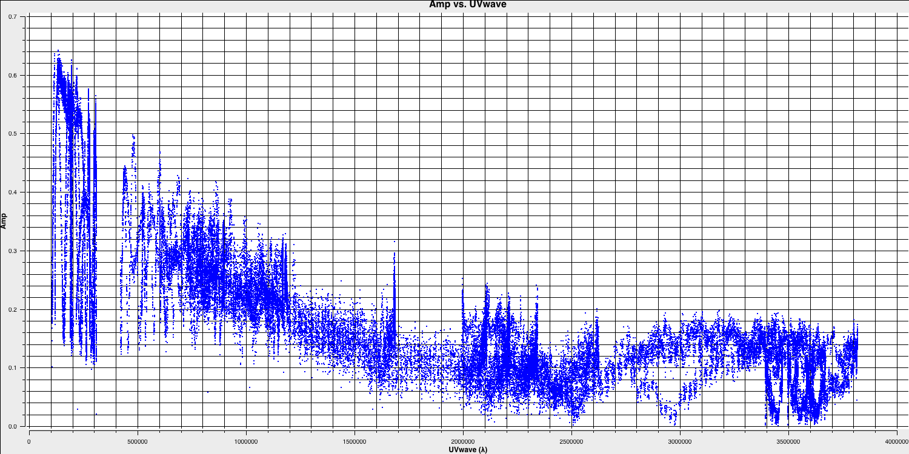
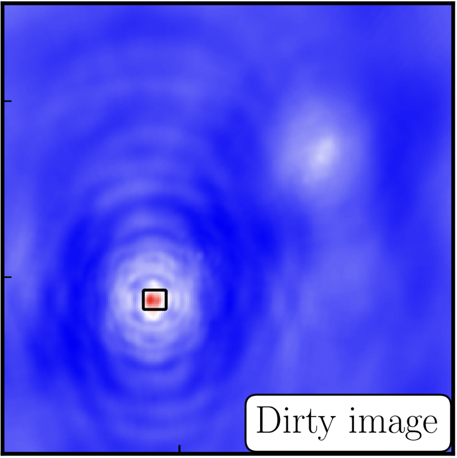
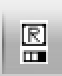

Imaging
Data required
For this section, it is advised to start from the pre-calibrated data (rather than your own from the calibration section). These are contained in the ERIS24_imaging_tutorial.tar.gz which you should have already downloaded. Untar this folder and enter the ERIS24_imaging folder that should have been created. Please ensure the following are in your current working directory,
1252+5634.ms- measurement set containing just the 3C277.1 visibilities (this should have been created after the calibration tutorial or untar from the imaging tar bundle (see Home)3C277.1_imaging_outline2024.py- imaging script for the next three tutorials (imaging, self-calibration and advanced imaging)3C277.1_imaging_all2024.py- cheat script containing the answers
Table of contents
1. Imaging 101
The figure above summarises the imaging process (using our target as an example) and we shall go through this in the following section. If you remember from the lectures, we can represent the visibilities measured by an interferometer, $\mathsf{V} ( u , v )$, with the following equation: $$\mathsf{V} ( u , v ) \approx \iint _ { l m } \mathsf { B } ( l , m ) \exp\left[ - 2 \pi i ( u l + v m ) \right] \mathrm{d}l \mathrm{d}m$$ where $\mathsf { B } ( l , m )$ is the sky brightness distribution, $l,m$ are directional cosines and $u,v$ are the coordinates (defined as perpendicular to the source). From the lectures, you will remember that a key factor in interferometric observations is that we have an unfilled $uv$-plane i.e., we are not sensitive to all spatial frequencies. This makes imaging a fundamentally more difficult problem because we have to deal with arrays with 'holes' in them (also known as sparse arrays). This makes directly Fourier transforming the visibilities nigh-on impossible.
To get around this, we can define a sampling function, $\mathsf{S}(u,v)$, which is equal to 1 where there is a measurement on the $uv$ plane and 0 otherwise. The sampling function is easy to determine because we know exactly where our antennas are at all times, so we therefore know what parts of the $uv$ plane they will occupy. A good way to visualise $uv$ plane is to imagine the apparent movement of the antennas across the course of the observations as if you were looking at the Earth from the direction of the source.
If we multiply each side of the imaging equation by the inverse Fourier Transform of the sampling function, we can Fourier Transform ($\mathfrak{F}$) the imaging equation to give: $$\mathsf{ B } ( l , m ) * \mathsf{ D } ( l , m ) \approx \iint _ { uv } \mathsf{S} ( u , v ) \mathsf{V}( u , v ) \exp\left[ 2 \pi i ( u l + v m ) \right] \mathrm{d}u\mathrm{d}v \\\mathsf{ D } ( l , m ) = \iint _ { u v } \mathsf{S} ( u , v ) \exp\left[ 2 \pi i ( u l + v m )\right] \mathrm{d}u \mathrm{d}v$$ where $\ast$ is the convolution operator. You can see that now we can recover the intrinsic source brightness distribution $\mathsf{B}(l,m)$ if we can deconvolve the $\mathsf{D}(l,m)$ term from it. This $\mathsf{D}(l,m)$ term is known as the dirty beam or point spread function (PSF). Luckily this can be derived easily because we know exactly what $\mathsf{S}(u,v)$ is.
Sounds simple eh? Not so! The next step, namely the deconvolution of the PSF from the dirty image, is a little more complicated than it sounds. The deconvolution process is called an 'ill-posed' problem in mathematics. What this means is that, without some assumptions, solutions to deconvolution are often not unique i.e. there are many variants of $\mathsf{B}(l,m)$ that would satisfy the equation. In addition to this, the algorithms used to perform deconvolution can be highly non-linear and can diverge from 'good' solutions.
To help the deconvolution process, we can apply a range of assumptions in order to guide the deconvolution process towards to the most likely sky brightness distribution. These assumptions are often physically based, e.g. the assumption that $\mathsf{B}(l,m)$ is always positive, but the assumptions can vary slightly with each different deconvolution algorithm.
The most commonly used string of algorithms are the CLEAN variants which we shall discuss here. The standard CLEAN algorithm (either Högbom or Clark) assumes that the sky is sparse, i.e., radio sources are far from each other and that the sky brightness distribution can be represented by point sources (i.e. delta functions). The CLEAN algorithm goes through many cycles in which it identifies the brightest pixels and then removes 10% (the default value) of the flux density at each of these pixels and records the value and position in a model image. CLEAN then calculates the contribution of these removed pixels convolved with the PSF and subtracts it from the dirty image. This is known as a 'minor cycle'.
After a certain number of minor cycles, the model is the Fourier transformed and subtracted from the visibility data, which are then re-Fourier transformed back to make a new dirty image, which will have less bright emission and fewer contributions from the dirty beam. This is known as a 'major cycle'. These cycles are continued until the final dirty image (or the 'residual image') is indistinguishable from noise. The following plot shows the CLEAN process on 3C277.1, which we are about to image. You can see how the model gets built up and the contribution from the PSF reduces over each major cycle and each CLEAN iteration (which removes the 10% from the brightest pixel).
Once deconvolution is complete and the residual image looks close to noise, the model is convolved with the synthesised beam and added (without all the horrible sidelobes) back into the data. The synthesised or restoring beam is an idealised Gaussian fit to the PSF and can be thought of as the effective resolution of the interferometer array. The final image is shown in the right most panel of the figure at the start of this section. The synthesised beam size is represented by the elliptical overlay in the bottom left of the image.
2. Determining the imaging parameters (steps 1-2)
Let's get on with making our first image using the CASA task tclean. In the CASA prompt, type default(tclean) and then inp. There is a quite a few inputs which can be quite daunting, however, this task is very versatile and conducts imaging for many different observing set-ups (e.g. spectral line, wide-field etc.). If you wonder what is best for your data, consult the CASA docs. Note that for Mac OS users, we will be using a task called run_iclean. This is functionally the same as tclean and is simply a wrapper that provides the GUI to do interactive cleaning because the casaviewer has been depreciated on Mac OS.
Important:. For the next sections, Linux specific help will start the sentence with a (L) and Mac specific with a (M)
- Take a look at step 2 and fill in the empty parameters using the information and instructions given below. For the following
Linux
tclean(vis=target+'.ms', imagename='target1', specmode='mfs', niter=1500, cycleniter=300, threshold=0, imsize=['**','**'], cell='**', weighting='**', deconvolver='**', savemodel='modelcolumn', interactive=True)Mac OSrun_iclean(vis=target+'.ms', imagename='target1', specmode='mfs', niter=1500, cycleniter=300, threshold=0, imsize=['**','**'], cell='**', weighting='**', deconvolver='**', savemodel='modelcolumn') ft(vis=target+'.ms', model='target1.model', usescratch=True)
There some things that we always need to decide and set when imaging which are:
imagename- this is self explanatory, you need to set an image name which should describe the imaging step and object imaged.field- this is the name of the field that you want to observe and again is self-explanatory.cell- this is the angular size of each pixel in our output image. To estimate this, we need to determine the resolution of our interferometer. We can do this by looking at the $uv$ distance (i.e. the radial distance of measurements in the $uv$ plane). This is done in step 1 of your3C277.1_imaging_outline2024.pyscript.- Either execute step 1 or use the following commands,
plotms(vis='1252+5634.ms', xaxis='uvwave', yaxis='amp', correlation='RR', avgchannel='16', spw='3', showmajorgrid=True, showminorgrid=True, plotfile='', overwrite=True)
Only the highest frequency spectral window is chosen (as this corresponds to the best resolution, remember $\lambda/B$), and only one correlation is picked. These are picked to improve the plotting time.
In this plot, the greatest projected baseline length of the observation corresponds to the highest possible resolution of your observation. Note that we have plotted this in units of wavelength so that we can simplify the calculation.
To obtain a good value for the cell size, you should read the highest $uv$ distance value (which is approximately $3.8\times10^{6}\,\lambda$). With this obtained we can convert the values into a representative resolution (remember the resolution of an interferometer is $\sim\lambda/D$ and the $\lambda$s will cancel out!).
There is one other factor that we have missed out and that is Nyquist sampling ($N_\mathrm{s}$). Remember that, during imaging, we have to fit a 2D Gaussian to the PSF in order to get our synthesised/restoring beam. The minimum number of pixels required to obtain a fit to a Gaussian must be at least 3 pixels but often (especially for sparse arrays where the PSFs are highly non-Gaussian) more pixels are used.
Based upon the aforementioned points, an estimate for a good cell size is given by the following equation: $$\mathrm{cell} \approx \frac{180}{\pi N_\mathrm{s}} \times \frac{1}{D_\mathrm{max}\,\mathrm{[\lambda]}}~\mathrm{[deg]}$$
In this case assuming a $D_\mathrm{max} = 3.8\times10^{6}\,\lambda$ and $N_\mathrm{s}$ of 4 pixels, you should obtain a cell size of around $13.5\,\mathrm{milliarcseconds~(mas)}$ i.e.
cell=['13.5mas'].- Either execute step 1 or use the following commands,
-
imsize- This describes the number of pixels your image is going to be on a side. This is often a compromise between computing speed and deconvolution performance. You want an image which is not too large, but large enough that you can remove the PSF sidelobes (see the imaging figure above!). If your source is extended, then the image size may also need to be larger to account for this. On top of this, we also want to set an image size which is optimal for the underlying algorithms intclean. According to CASA, a good number to choose is even, divisible by 2, 3, 5 and 7 only, or a factor of $2^n$!. An easy rule of thumb is to use an image size of $2^{n}\times 10$, where $n$ is an integer.Our source is extended so we want an image to be large enough to cover all the emission. To find a good image size, look at Ludke et al. 1998 page 5, and estimate the size of that image, in pixels. You should find that something close to an image size of 256 should be sufficient i.e.,
imsize=[256,256] deconvolver- The choice of deconvolution algorithm is highly dependent upon your source and your interferometer. To establish the correct choice for you data consult the CASA docs. A good rule of thumb of what to pick is the following:- Do you expect that your sources are extended i.e. $\gg$ than the resolution? - consider
multiscale(this deconvolution algorithm, assumes the sky is comprised of many Gaussians which is better for modelling fluffy emission compared to using delta functions) - Does your observation have a large fractional bandwidth i.e. a good rule of thumb is $\mathrm{total~bandwidth/central~frequency} = \mathrm{BW}/\nu_c > 15\%$? - consider
mtmfs(this models the change in flux/morphology of the source across the bandwidth and failures to model this can cause un-deconvolvable errors in the image)
If the source is extended too, implement multiscale deconvolution by setting thescalesparameter. - Do you expect that the source has polarisation structure? - consider
clarkstokes(which cleans the separate polarisations separately) - If not, then we would expect we have a small bandwidth and compact structure therefore the
clarkalgorithm should be sufficient.
In our case, we have a borderline fractional bandwidth ($\mathrm{BW}/\nu_c \sim 0.512\,\mathrm{GHz}/5.072\,\mathrm{GHz} \sim \mathbf{10\%}$), and we don't care about polarisation here. This means that setting
deconvolver='clark'should be fine (note that we will try multiscale in the advanced imaging tutorial)!- Do you expect that your sources are extended i.e. $\gg$ than the resolution? - consider
niter- following on from the deconvolver, this parameter determines the number of iterations the deconvolution algorithm is going to use. If you remember earlier, for each iteration a percentage of the flux of the brightest pixel is removed from the dirty image therefore the larger theniter, the more flux is removed. Luckily we are going to do this interactively and inspect the residuals after each major cycle so we can adjustniteron the fly. For this, we won't go so deep therefore we setniter=1500. (L) We will do it interactively so setinteractive=True. (M) For Mac users, we shall userun_icleanto do interative cleaning. Note that if we didn't do it interactively, you could use tclean on Mac OS.weighting- the weighting parameter determines how the various baselines are represented in the imaging routine. Uniform weighting makes each baseline in the $uv$ plane have equal weight, which typically gives images with the highest resolution, whilst natural weighting maximises sensitivity and increases the contributions from data points/baselines which are closer in the $uv$ plane. For this imaging, we shall run the default ofweighting='natural'. We shall investigate the effects of changing the weighting in the advanced imaging section.
3. First image of 3C277.1 (step 2)
With the imaging parameters set in step 2, we want to start the imaging of our source.
- Execute step 2 and check the logger. The algorithm will grid the visibilities with the appropriate weights and produce the PSF, ready for deconvolution and inversion of the visibilities to make our dirty image. We can guide the deconvolution process so that it doesn't diverge (as explained in part 9).
- The guidance comes via the use of masks. These masks tells the algorithm which pixels should be searched for flux to be removed and the PSF deconvolved. These masks should be set in regions which you think contains real flux. These typically look like the PSF shape in the case of point sources (see part 9 of this section for the PSF shape). Because we set (L)
interactive=True/ (M) usedrun_icleanCASA returns a GUI similar to that shown below where we can set masks and guide the deconvolution process.
Linux
- The GUI will show the dirty image. At the bottom left of the image, there is a bright source with the characteristic PSF shape around it. It is here that we want to begin setting our mask. The figure to the right shows the dirty image and the black contour an example of a good first mask.
- To set the mask we want to use the region buttons (e.g. (L)  / (M) ). (L) The filled rectangle of the three rectangles on these buttons, corresponds to the mouse buttons. (L) These can be adjusted and re-assigned to different mouse buttons by clicking on them.
- The gif below shows how we can set the mask and run the next major cycle. Important Note that to set the mask, we need to (L) double-click with the appropriate button (in this case, the right mouse button) / (M) press shift+a, and the box should change to a solid line. Set a mask round the obviously brightest regions and clean interactively, mask new regions or increase the mask size as needed. A guide to setting a mask is shown in the gif below.
- Once the green arrow button has been pressed, the next major cycle will run and the GUI will freeze. This process will remove some flux, deconvolve the PSF and begin the process of generating the model as explained in part A. Once these contributions have been removed from the visibilities, the task will generate another residual image with less bright flux and re-open the imview GUI.
- Continue with the CLEANing process and modify the mask as appropriate. Note that you can delete parts of the mask by clicking on the erase button, overlaying the green box on the region to remove and double clicking to remove that portion.
- Over the course of the CLEAN process you should see the PSF imprint getting removed and the residual turning into noise (or noise + calibration errors). The plot from earlier, showing the deconvolution process
- After around 2 major cycles, you should see some low flux density structure appears which we then need to CLEAN. This is why we modify our mask as this was unseen in the dirty image
- Continue until around major cycle 6, where the source is indistinguishable from noise, and click on the red cross to stop cleaning.
With CLEAN stopped and completed, the algorithm shall take the model image (the delta functions) convolve it with the fitted PSF i.e. synthesised beam and add this onto the residual image to generate the image. Let's have a look at what clean has made,
- Type !ls into the CASA prompt.
You should see some new files which are CASA images. These are:
target0.image- The model convolved with the synthesised beam added into the residual imagetarget0.residual- The noise image after CLEAN deconvolution (seen in the interactive prompt during CLEANing)target0.model- The underlying estimated sky brightness model by CLEANtarget0.psf- The FT of the sampling function that is deconvolvedtarget0.pb- The primary beam response across the image (Note this is not correct for heterogeneous arrays yet)target0.sumwt- The sum of weights (not needed)
- (L) Type
imviewinto the CASA prompt / (M) open CARTA to view these images. Try to discern where these images originate from by comparing it to the imaging 101 section. - Look at the
target0.image. The source shows some structure but the background noise looks fairly non-Gaussian, i.e., there are stripes and negatives in a non-random way. This is a tell-tale sign of calibration errors. We shall deal with these errors in the self-calibration section.
4. Measuring image properties (step 3)
Now that we have produced the first image, we want to extract some properties from this image. You will have to do this in order to extract your science while, in this case, we are going to do it to track the calibration improvements in the next tutorial (on self-calibration).
- Take another look at your image using (L)
imview/ (M) CARTA. The synthesised beam is displayed, and is about $64\times53\,\mathrm{mas}$ for this image. - To track the calibration improvements we want to measure the noise level ($\sigma$) and the peak brightness ($S_\mathrm{p}$) so that we can measure the signal-to-noise ($\mathrm{S/N} = S_\mathrm{p}/\sigma$). To do this we can use the set a region. We want to have a region where there's no source flux present so we can measure the rms noise (see the statistics tab) and another region over the brightest emission to measure the peak brightness. Try this interactively first and record your values for the peak, rms noise and S/N.
- To automate this process we can also use the task
imstatand select the boxes using the inputs. Take a look at step 3 and input the box values (note that the box format isbox = "x_bottom_left_corner, y_blc, x_top_right_corner, y_trc")rms1=imstat(imagename='target0.image', box='**,**,**,**')['rms'][0] peak1=imstat(imagename='target0.image', box='**,**,**,**')['max'][0] print(('target0.image rms %7.3f mJy' % (rms1*1000.))) print(('target0.image peak %7.3f mJy/bm' % (peak1*1000.)))(L) The other command in step 3 illustrates the use of
imviewto produce reproducible images. This is optional but is shown for reference. You can useimviewinteractively to decide what values to give the parameters. Note: If you use it interactively, make sure that the black area is a suitable size to just enclose the image, otherwiseimviewwill produce a strange aspect ratio plot. (M) On Macs, you can save the image in CARTA to save a png.imview(raster={'file': '1252+5634_1.clean.image', 'colormap':'Rainbow 2', 'scaling': -2, 'range': [-1.*rms1, 40.*rms1], 'colorwedge': True}, zoom=2, out='1252+5634_1.clean.png')- Execute step 3 and you should get the rms and peak brightness printed onto the screen. Calculate the S/N and record these values for later. You should also have a saved plot like the one shown below
I managed to get a peak brightness of $S_\mathrm{p} = 160.96\,\mathrm{mJy\,beam^{-1}}$, a rms noise level of $\sigma = 0.71\,\mathrm{mJy\,beam^{-1}}$ which corresponds to a $\mathrm{S/N} \approx 225$. You should find values that are similar to this ($\mathrm{S/N} \sim 160\mbox{--}240$). If you did not, take a look at your residuals to check you cleaned deep enough or retrace your calibration steps.
Linux / imview Mac OS / CARTA
Mac OS / CARTA

Congratulations, you have finished the imaging part of this tutorial. Next we shall move onto removing these final calibration errors using this image. Follow the link below to continue.